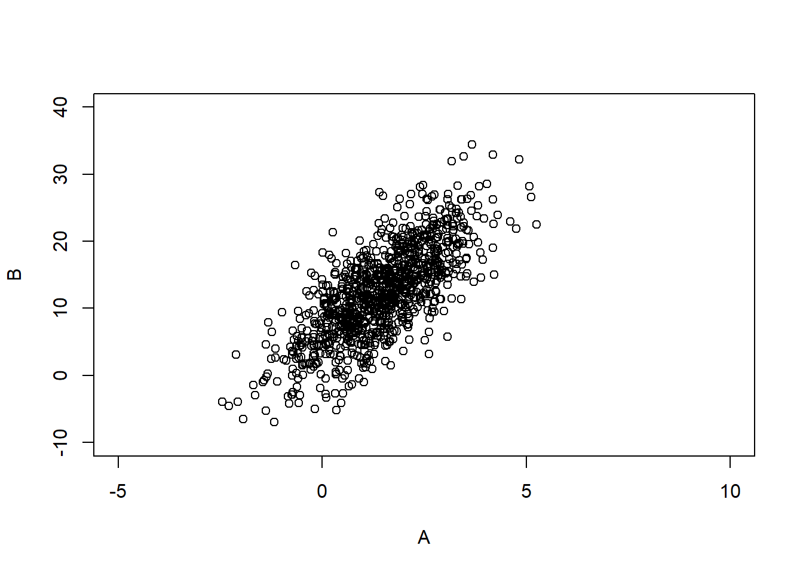
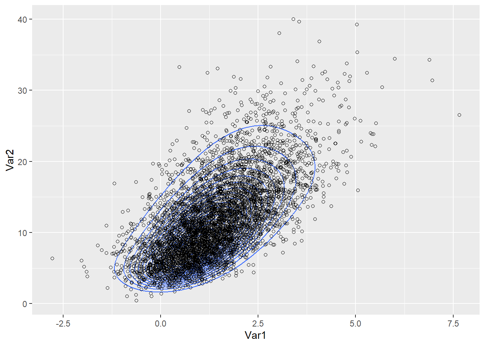
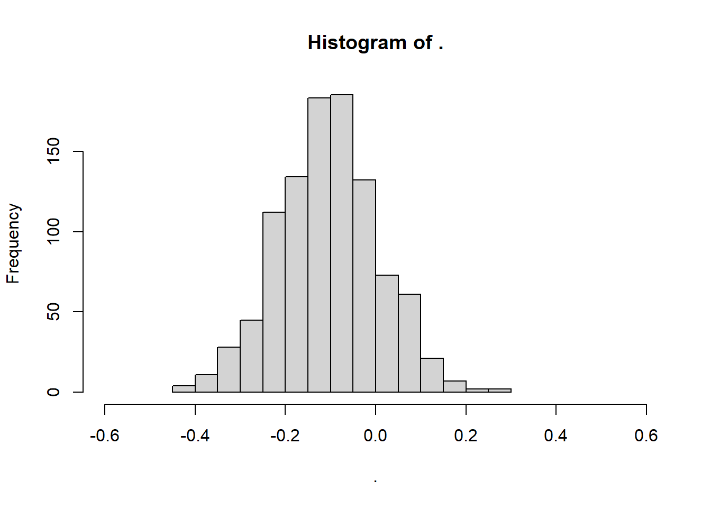
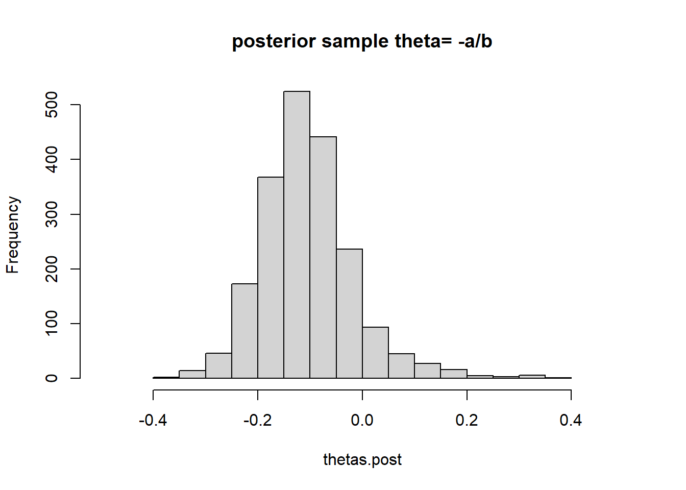
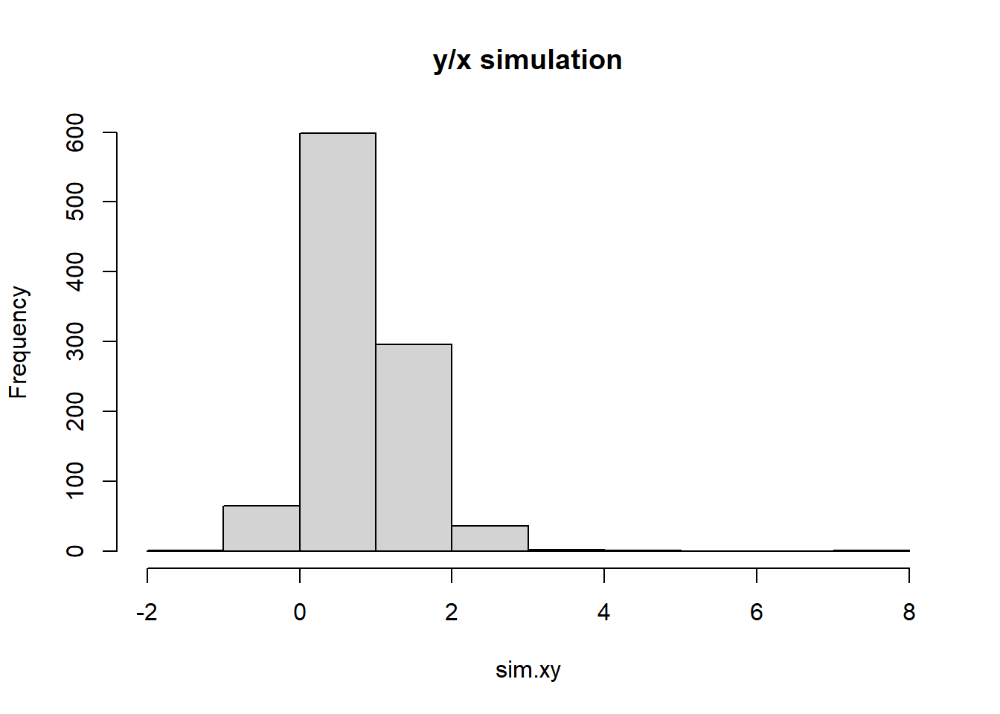

Chapter 4 Asymptotics and connections to non-Bayesian approaches
4.1 Normal approximations to the posterior distribution
If the posterior distribution is unimodal and roughly symmetric, it can be approximated by a normal distribution, such that the logarithm of the posterior density is approximated by a quadratic function via the Taylor series expansion of \(\theta\).
Consider a quadratic approximation to the log-posterior centered on the posterior mode. where the linear term goes to 0.
\[\begin{equation} log p(\theta|y) = log p(\hat{\theta|y}) + (1/2)(\theta-\hat{\theta)})^T[ d^2/d\theta^2 log p(\theta|y)]_{\theta=\hat{\theta}}+... \tag{4.1} \end{equation}\]
The first term is a constant and the second term is proportional to the normal density yielding the approximation and we can expand the posterior density second derivative in terms of the prior and likelihood.
\[\begin{equation} [d^2/d\theta^2 log p(\theta|y)]_{\theta=\hat{\theta}} =[d^2/d\theta^2log p(\theta)]_{\theta=\hat{\theta}}+\sum_{i=1}^n[d^2/d\theta^2log p(y_i|\theta)]_{\theta=\hat{\theta}} \end{equation}\]
Now to show the normal approximation
\[ \begin{aligned} log p(\theta|y) &= log p(\hat{\theta|y}) + (1/2)(\theta-\hat{\theta)})^T[ d^2/d\theta^2 log p(\theta|y)]_{\theta=\hat{\theta}}+... \\ &= log p(\hat{\theta|y}) + (1/2)(\theta-\hat{\theta)})^T ( d^2/d\theta^2 log p(\hat{\theta}) + \sum_{i=1}^n d^2/d\theta^2 log p(y_i | \theta)_{\theta=\hat{\theta}} ) \\ log p(\theta|y) - log p(\hat{\theta|y}) &= + (1/2)(\theta-\hat{\theta)})^T (c -n* J(\theta_0)) \\ p(\theta|y ) - p(\hat{\theta}|y) &\propto exp( -\frac{1}{2(nJ(\theta_0))^{-1}}(\theta-\hat{\theta})^T) \end{aligned} \] Which taking the limit as \(|\theta -\hat{\theta}| \to 0\), then the posterior converges to 0 written as \(p(\theta|y )- p(\hat{\theta}|y) \to 0\) as \(n \to \infty\), and we have normality.
In discussing large-sample periorties, the concept of Fisher Information , \(J(\theta)\), in the context of Jeffreys’ prior is used.
\[\begin{equation} p(\theta|y) \approx N(\hat{\theta}, [I(\hat{\theta})]^{-1}) \tag{4.2} \end{equation}\]
Where I(\(\theta)\) is the observed information \[\begin{equation} I(\theta)= -d^2/d\theta^2 log p(\theta|y) \end{equation}\]
Where is the mode \(\hat{\theta}\) is in the interior of the parameter space, then the information is positive definite.
Summarizing posterior distributions by point estimates and standard errors
From the asymptotic theory, if n is large enough, a posterior distribution is approximated by the normal distribution. A standard inferential summary is the 95\(\%\) interval obtained by computing a point estimate \(\hat{\theta}\) such as the MLE (which is the posterior under a uniform prior density), plus or minus two standard errors, with the standard error estimated from the information at the estimate \(I(\hat{\theta})\).
4.2 Large-sample theory
The basic tool of Bayesian inference is asymptotic normality of the posterior distribution, as more data arrive from the same underlying process, the posterior distribution of the parameter vector approaches multivariate normality. Suppose the data are modeled by a parametric family, \(p(y|\theta)\), and a prior p\((\theta)\), and suppose that the true distribution is included in the parametric family (i.e. if \(f(y) = p(y|\theta_0))\) then the property of asymptotic normality and consistency holds.
Consistency is defined as the posterior distribution converges to a point mass at the true parameter, \(\theta_0\) as n\(\to \infty\).
Note, that if the true distribution is not included in the parametric family, then there is no longer a true parameter to converge to. One must use the Kullback-Leibler divergence to determine the value \(\theta_0\) that makes the model distribution closest to the true distribution.
Asymptotic normality and consistency
Under regularity conditions ( the likelihood is a continuous function of \(\theta\), and that \(\theta_0\) is not a boundary point), as \(n\to \infty\), the posterior distribution of \(\theta\) approaches normality with mean \(\theta_0\) and variance (\(nJ(\theta_0))^{-1}. Where J(\))$ is the FIsher information in context fo Jeffreys’ Prior.
The posterior mode is consistent for \(\theta_0\), as \(n\to \infty\), so the mass of the posterior \(p(\theta|y)\) becomes concentrated in small neighborhoods of \(\theta_0\) and the distance of \(|\theta-\theta_0|\to 0\).
Further, we can write the coefficient of the quadratic term in (4.1). \[\begin{equation} [d^2/d\theta^2 log p(\theta|y)]_{\theta=\hat{\theta}} =[d^2/d\theta^2log p(\theta)]_{\theta=\hat{\theta}}+\sum_{i=1}^n[d^2/d\theta^2log p(y_i|\theta)]_{\theta=\hat{\theta}} \end{equation}\]
This is considered a function of \(\theta\), as a constant term plus the sum of n terms whose expected value under the true sampling distribution \(p(y_i|\theta_0\))., is approximately \(-J(\theta_0)\), assuming \(\hat{\theta}\) is close to \(\theta\).
In summary, as the limit of n, in the context of a family of models posterior mode, \(\hat{\theta}\), approaches the truth \(\theta_0\), and the curvature approaches \(nJ(\hat{\theta})\) or nJ(\(\theta_0\)). Interesting, as \(n\to\infty\) the prior term is a constant, and the likelihood dominates the posterior because the likelihood alone is used to obtain the mode and curvature for the normal approximation.
4.3 Frequency evaluations of Bayesian inferences
The notion of stable estimation which says that for a fixed model, the posterior approaches a point as more data arrive, leading , in the limit, to inferential certainty, is based on the concepts of repeated sampling. It is certainly appealing that if the hypothesized family of probability models contain the true distribution, then as more information about \(\theta\) arrives, the posterior distribution converges to the true value of \(\theta\).
Large sample correspondence
Suppose that the normal approximation holds (4.2) for the posterior distribution for \(\theta\), then we can transform to the standard normal multivariate normal
\[\begin{equation} [I(\hat{\theta})]^{1/2}(\theta-\hat{\theta}) |y \sim N(0,I) \tag{4.3} \end{equation}\]
Where \(\hat{\theta}\) is the posterior mode and \([I(\hat{\theta})]^{1/2}\) is any matrix square root of the observed fisher information. In addition to \(\hat{\theta}\to \theta_0\) we can write the approximation using I(\(\theta_0\)). If the true data distribution is included in the class of models, so that \(f(y)= p(y|\theta)\), then under repeated sampling with fixed \(\theta\), as \(n \to \infty\) then
\[\begin{equation} [I(\hat{\theta})]^{1/2}(\theta-\hat{\theta}) |\theta \sim N(0,I) \tag{4.4} \end{equation}\]
This is generally proven for the MLE, but can be extended for the posterior mode \(\hat{\theta}\). This results suggest that for any function (\(\theta-\hat{\theta})\) the posterior distribution derived from (4.3) is asymptotically the same as the repeated sampling distribution from (4.4). Thus for a \(95\%\) central posterior interval for \(\theta\) will cover the true value 95\(\%\) of the time under repeated sampling with any fixed true \(\theta.\)
Point estimation, consistency, and efficiency
For large samples, obtaining an estimate- makes most sense when the posterior mode \(\hat{\theta}\) is the obvious center and the \(nI(\theta_0\)) is small and practically unimportant. However in smaller samples, one can define optimal point estimates, but it is better to show the full representation of the full posterior distribution. In most problems, the point estimate and the standard error are adequate to summarize the posterior inference. We interpret the estimate as an inferential summary, not as a decision solution / classification.
A point estimate is said to be consistent as the samples get larger, it converges to the true value parameter. Thus if \(f(y)=p(y|\theta_0)\), then a point estimate \(\hat{\theta}\) of \(\theta\) is consistent if its sampling distribution converges to a point mass at \(\theta_0\) for \(n\to \infty\).
Asymptotic unbiasedness is defined as \((E(\hat{\theta}|\theta_0 - \theta_0))/sd(\hat{\theta}|\theta_0)\) converges to 0 as sample size increases.
Efficiency for a point estimate is if there is no other function of y that estimates \(\theta\) with lower mean squared error, that is if the expression E((\(\hat{\theta}-\theta_0)^2|\theta_0)\) is at its optiomal lowest value. An estimate is asymptotically efficient if its efficiency approaches 1 as the sample size n, increases to infinity.
Confidence coverage
If a region C(y) includes \(\theta_0\) at least 100(\(1-\alpha)\%\) of the time, then C(y) is called the 100(\(1-\alpha)\%\) confidence region for parameter \(\theta\). We saw previously that asymptotically a 100(\(1-\alpha)\%\) central posterior interval for \(\theta\) has the property that , in repeated samples of y, 100(\(1-\alpha)\%\) of the intervals include \(\theta_0\).
4.4 Exercises
Question 1
- a using simple calculus we found l’ = \(\frac{2*\sum_{i=1}^5(y_i-\theta)}{1+(y_i-\theta)^2}\) and l’’ = \(\frac{-2\sum_{i=1}^5((y_i-\theta)^2-1)}{(1+(y_i-\theta)^2)^2}\)
mleCauchy<-function(x,tolerance=0.001){
startvalue<-median(x)
n=length(x)
theta_current<-startvalue
first_deriv<- 2*sum((x-theta_current)/(1+(x-theta_current)^2))
while( abs(first_deriv)>tolerance){
second_deriv<- 2*sum(((x-theta_current)^2-1)/(1+(x-theta_current)^2)^2)
theta_new<- theta_current - first_deriv/second_deriv
theta_current<-theta_new
first_deriv<- 2*sum((x-theta_current)/(1+(x-theta_current)^2))
}
return(theta_current)
}
x<-c(-1.94,0.59,-5.98,-0.08,-0.77)
mleCauchy(x,0.0001)## [1] -0.5343968- b the MLE for theta is -0.138. Using newton-raphson method for \(\theta^{1} = \theta^0 - l'(\theta^0)/l''(\theta^0)\)
x<-c(-2,-1,0,1.5,2.5)
posterior_mode<-mleCauchy(x,0.0001)
print(posterior_mode)## [1] -0.1376488 ## optimize function
optimize(function(theta) -sum(dcauchy(x, location=theta, log=TRUE)), c(-100,100)) ## $minimum
## [1] -0.1376593
##
## $objective
## [1] 11.17292-c for the normal approximation we use \(p(\hat{\theta}|y)\approx N(\hat{\theta}, nI(\theta_0)^-1)\) \[ \begin{aligned} I(\theta) &= E(d/d\theta log p(\theta|y))^2 \\ E[ (\frac{2(y-\theta)}{1+(y-\theta)^2})^2] &= \int_{-\infty}^{\infty}(\frac{2(y-\theta)}{1+(y-\theta)^2})^2 \frac{1}{1+(y-\theta)^2}d\theta\\ &= 8 \int_{0}^{\infty} \frac{u^2}{(1+u^2)^2}du, u= y-\theta, du = -d\theta\\ & \text{2nd substitution } x=\frac{1}{1+u^2} \implies u^2=\frac{1}{x}-1 , du=(1/2)(1/x-1)^{-1/2}(-1/x^2)dx\\ & = -4 \int (1-x)x^2 [1/2 (\frac{1}{x}-1)^{-1/2}(-1/x^2) dx] \\ &2 \int_0^\infty (1-x) (1/x -1)^{-1/2} dx \\ & 2 \int_0^\infty x^{1/2}(1-x)^{1/2} \sim Beta(\alpha=3/2, \beta = 3/2)\\ I(\theta)& = \frac{ 4 \Gamma(3/2)\Gamma(3/2)}{\Gamma(3)} \approx 1.5708 \end{aligned} \] \(p(\theta| y) \approx N(\hat{\theta}, \sigma^2 = 1/(n*I(\theta)))\)
# need to derived the Fisher information for Cauchy
fishers.n<-(4*gamma(3/2)*gamma(3/2)/(gamma(3)))
var.approx<- 1/(length(x)*fishers.n)
norm.approx<-(rnorm(1000,mean=posterior_mode,sd=sqrt(var.approx)))
hist(norm.approx)
compare with 2.11 grid approach using the Cauchy distribution, we see that normal approximation has much wider tails compared to the exact distribution, this is because of the small sample size.
y<-x<-c(-2,-1,0,1.5,2.5)
step=0.01
#theta<-seq(from=0,to=100000)/m
theta<-seq(-10, 10,by=step)
## p(theta | y) ~ p(y|theta)*p(theta)
dens<-function(y,th){
dens0<-NULL
for(i in 1:length(th)){
dens0<-c(dens0, prod (dcauchy(y, th[i],1)))
}
dens0
}
#dens(y,theta)
# L(theta | y) = prod_{i=1}^n f(y| theta) we need the product term here.
unnorm.post<-sapply(theta, function(x) prod(dcauchy(y,location=x,scale=1) )) ## un norm post
## p(theta| y ) = p(y| theta)p(theta) where p(theta) is U(0,100)
post<-unnorm.post/(step*sum(unnorm.post))
plot(theta,post,type='l',main='Normalized posterior', ylim=c(0, 1.1*max(post))) samps<-(sample(theta,1000,prob=post*step,replace=T))
ytilde<-rcauchy(1000,location=samps,scale=1)
hist(ytilde)
Exercise 2
To show the analytic information matrix of the bioassay example.
The logistic function has a derivative in the form \[\begin{equation} \partial/\partial\alpha logit^{-1}(\alpha+\beta*x_i) = \frac{exp(\alpha+\beta*x_i)}{(1+exp(\alpha+\beta*x_i))^2}=\frac{logit^{-1}(\alpha+\beta*x_i)}{1+exp(\alpha+\beta*x_i)} \end{equation}\]
\[\begin{equation} \partial/\partial\beta logit^{-1}(\alpha+\beta*x_i) = \frac{exp(\alpha+\beta*x_i)x_i}{(1+exp(\alpha+\beta*x_i))^2}=\frac{logit^{-1}(\alpha+\beta*x_i)x_i}{1+exp(\alpha+\beta*x_i)} \end{equation}\]
Also by algebra
\[\begin{equation} \frac{1}{1-logit^{-1}(\alpha+\beta*x_i)} = 1+exp(\alpha+\beta*x_i) \end{equation}\]
Normal approximation using the information \[ \begin{aligned} p(\alpha,\beta | y_i,n_i, x_i) &\propto p(\alpha,\beta)p(y_i | \alpha,\beta,n_i,x_i)\\ &\propto [logit^{-1}(\alpha+\beta*x_i)]^{y_i}[1-logit^{-1}(\alpha+\beta*x_i)]^{n_i-y_y}\\ lp(\alpha,\beta | y_i,n_i, x_i) &\propto y_i log([logit^{-1}(\alpha+\beta*x_i)])+(n_i-y_i)log([1-logit^{-1}(\alpha+\beta*x_i)])\\ \end{aligned} \] \[ \begin{aligned} \frac{\partial lp}{\partial\alpha} &\propto y_i\frac{1}{logit^{-1}(\alpha+\beta*x_i)}\frac{logit^{-1}(\alpha+\beta*x_i)}{1+exp(\alpha+\beta*x_i)}-\frac{n_i-y_i}{1-logit^{-1}(\alpha+\beta*x_i)}\frac{logit^{-1}(\alpha+\beta*x_i)x_i}{1+exp(\alpha+\beta*x_i)}\\ &=\frac{y_i}{1+exp(\alpha+\beta*x_i)} - (n_i -y_i)logit^{-1}(\alpha+\beta*x_i) \\ & = y_i(1-logit^{-1}(\alpha+\beta*x_i) - (n_i -y_i)logit^{-1}(\alpha+\beta*x_i) \\ &= y_i - n_i*logit^{-1}(\alpha+\beta*x_i) \end{aligned} \] note that \[\begin{equation} \frac{1}{1+exp(\alpha+\beta*x_i)} =1-logit^{-1}(\alpha+\beta*x_i) \end{equation}\] \[ \begin{aligned} \frac{\partial^2 lp}{\partial\alpha^2} &\propto \frac{-n_i logit^{-1}(\alpha+\beta*x_i)}{1+exp(\alpha+\beta*x_i)}\\ &= logit^{-1}(\alpha+\beta*x_i)(1-logit^{-1}(\alpha+\beta*x_i))n_i \end{aligned} \] \[ \begin{aligned} \frac{\partial^2 lp}{\partial\alpha \partial \beta} &\propto \frac{-x_in_i*logit^{-1}(\alpha+\beta*x_i)}{1+exp(\alpha+\beta*x_i)}\\ &= -x_i*n_i*logit^{-1}(\alpha+\beta*x_i)(1-logit^{-1}(\alpha+\beta*x_i)) \end{aligned} \]
\[ \begin{aligned} \frac{\partial lp}{\partial \beta} &\propto \frac{y_i}{1+exp(\alpha+\beta*x_i)}\frac{logit^{-1}(\alpha+\beta*x_i)}{1+exp(\alpha+\beta*x_i)} + \frac{n_i-y_i}{1-logit^{-1}(\alpha+\beta*x_i)}\frac{-x_i*logit^{-1}(\alpha+\beta*x_i)}{1+exp(\alpha+\beta*x_i)}\\ &\propto y_i*x_i(1-logit^{-1}(\alpha+\beta*x_i))-x_i(n_i-y_i)logit^{-1}(\alpha+\beta*x_i) \end{aligned} \]
\[ \begin{aligned} \frac{\partial^2 lp}{\partial \beta^2} &\propto x_iy_i (\frac{-x_ilogit^{-1}(\alpha+\beta*x_i)}{1+exp(\alpha+\beta*x_i)})-x_i(n_i-y_i)\frac{logit^{-1}(\alpha+\beta*x_i)}{1+exp(\alpha+\beta*x_i)}\\ &= logit^{-1}(\alpha+\beta*x_i)x_i^2 -y_i(1-logit^{-1}(\alpha+\beta*x_i))-(n_i-y_i)(1-logit^{-1}(\alpha+\beta*x_i))\\ &= logit^{-1}(\alpha+\beta*x_i)(1-logit^{-1}(\alpha+\beta*x_i))(-n_ix_i^2) \end{aligned} \] Now the information matrix is evaluated at the posterior mode \(\hat{\alpha}\)
\[ I(\alpha,\beta) = \begin{bmatrix} \sum_i logit^{-1}(\alpha+\beta*x_i)(1-logit^{-1}(\alpha+\beta*x_i))n_i & \sum_i logit^{-1}(\alpha+\beta*x_i)(1-logit^{-1}(\alpha+\beta*x_i))x_in_i\\ \sum_i logit^{-1}(\alpha+\beta*x_i)(1-logit^{-1}(\alpha+\beta*x_i))x_in_i & \sum_i logit^{-1}(\alpha+\beta*x_i)(1-logit^{-1}(\alpha+\beta*x_i))x_i^2n_i\\ \end{bmatrix}_{\alpha,\beta = \hat{\alpha},\hat{\beta}} \] \[\begin{equation} p(\theta|y) \approx N(\hat{\alpha},\hat{\beta}, I(\alpha,\beta)^{-1}) \end{equation}\]
library(mvtnorm)
library(magrittr)
library(dplyr)
library(ggplot2)
assay<-data.frame(x=c(-0.86,-0.30,-0.05,0.73), n=c(5,5,5,5), y=c(0,1,3,5))
inv.logit<-function(theta){
return( (exp(theta)/(1+exp(theta))) )
}
library(matlib)
### normal approximation
alpha_hat<-1.353
beta_hat<-11.634
I_hat_theta<-matrix(c(sum(inv.logit(alpha_hat+beta_hat*assay$x)*(1-inv.logit(alpha_hat+beta_hat*assay$x))*assay$n),
sum(inv.logit(alpha_hat+beta_hat*assay$x)*(1-inv.logit(alpha_hat+beta_hat*assay$x))*assay$n*assay$x),
sum(inv.logit(alpha_hat+beta_hat*assay$x)*(1-inv.logit(alpha_hat+beta_hat*assay$x))*assay$n*assay$x),
sum(inv.logit(alpha_hat+beta_hat*assay$x)*(1-inv.logit(alpha_hat+beta_hat*assay$x))*assay$n*assay$x*assay$x)),nrow=2,ncol=2)
## asymptotic variance (a,b)
invI<-matlib::inv(I_hat_theta)
norm.approx<-rmvnorm(1000,mean=c(alpha_hat,beta_hat),sigma=invI)
colnames(norm.approx)<-c("A","B")
plot(norm.approx,xlim=c(-5,10),ylim=c(-10,40)) # figure 4.1(b) 
Exercise 3
A reasonable estimate for the posterior mode and standard deviation as proxy to the asymptotic values will utilize a GLM, where \(\theta= \frac{-\alpha}{\beta}\)= -0.109 (-0.15,0.37) as the limit values.
dr<-data.frame(xi=c(rep(-0.86,5),
rep(-0.30,5),
rep(-0.05,5),
rep(0.73,5)),
yi=c(rep(0,5),
1,rep(0,4),
1,1,1,rep(0,2),
rep(1,5)))
bioassay<-glm(yi~xi,family='binomial',dr)
#summary(bioassay)
ab<-coef(bioassay)
ab<-cbind(ab,confint(bioassay))## Waiting for profiling to be done... ld50<--ab[1,]/ab[2,]
print(ld50)## ab 2.5 % 97.5 %
## -0.1092528 0.3663445 -0.1560259Using a uniform prior, we compute the Bayesian posterior for \(\theta=-\alpha/\beta\) using posterior distribution for \(p(\alpha,\beta|y)\) and then compute \(\theta\) with interval -0.1049 (-0.27, 0.09) and the standard deviation is 0.0988. This reproduces figure 3.3 from section 3.7
## compare with the Bayesian approximation using 3.16 from section 3.7
library(mvtnorm)
library(magrittr)
library(dplyr)
library(ggplot2)
assay<-data.frame(x=c(-0.86,-0.30,-0.05,0.73), n=c(5,5,5,5), y=c(0,1,3,5))
## the point a,b by MLE is (0.8,7.7) so we grid around these solution.
a0= seq(-5,10,by=0.1)
b1= seq(-10,40,by=0.1)
a0b1<- expand.grid(a0, b1)
logit<-function(theta){
return( log(theta/(1-theta)))
}
inv.logit<-function(theta){
return( (exp(theta)/(1+exp(theta))) )
}
## equation 3.16 using the uniform
## alpha, beta come from uniform distribution
## \prod_(i=1)^5 p(y|theta) ~ \theta^y (1-theta)^n-y ## kth dose.
### logit(theta) = alpha+ beta*x
logit.likelihood<-function(alpha,beta,x,y,n){
theta_approx<- alpha+beta*x
bin.like<-(inv.logit(theta_approx))^y*(1-inv.logit(theta_approx))^(n-y)
return(bin.like)
}
## the alpha,beta stem from the grid, and we return the probability mass from the prior.
## uniform prior p(a,b) ~ 1
joint.prior<-function(alpha,beta){
prob.ab<-1
return(prob.ab)
}
posterior_density<-function(alpha,beta,assay){
joint_density<-joint.prior(alpha,beta)
probs<-NULL
for(k in 1:nrow(assay)){
p<-logit.likelihood(alpha,beta,assay$x[k],assay$y[k],assay$n[k])
probs<-c(probs,p)
}
totalLikelihood<-prod(probs)
return( joint_density*totalLikelihood)
}
posts<-NULL
## unnormalized posterior over grid which covers (a,b)
for(i in 1:nrow(a0b1)){
posts[i]<-posterior_density(a0b1[i,"Var1"],a0b1[i,"Var2"],assay)
}
posts_norm<-posts/sum(posts)
a0b1$joint.prob<-posts_norm
## grid sampling procedure
marginal.post_a<- a0b1%>%group_by(Var1)%>%summarise(p=sum(joint.prob))%>%data.frame
A<-B<-NULL
for(s in 1:5000){
a_s<-sample(marginal.post_a$Var1,1,prob=marginal.post_a$p)
p.a_s<-marginal.post_a[which(marginal.post_a$Var1==a_s),'p']
marginal.post_b<-a0b1[which(a0b1$Var1==a_s),]
marginal.post_b$cond.prob<-marginal.post_b$joint.prob/p.a_s
b_s<-sample(marginal.post_b$Var2,1,prob=marginal.post_b$cond.prob)
A<-c(A,a_s)
B<-c(B,b_s)
}
### need to add a random jitter around each point.
Ajit<-A+runif(length(A),min=0,max=0.1)
Bjit<-B+runif(length(B),min=0,max=0.1)
ab.post<-data.frame(A=Ajit,B=Bjit)
ggplot(a0b1)+
geom_contour(mapping = aes(x = Var1, y = Var2, z = posts), bins = 20)+
geom_point(data = ab.post, aes(x = A, y = B), pch = 21)
## posterior means (1.35,11.6)
message('posterior mean for A :',round(mean(A),3),' B ',round(mean(B),3))## posterior mean for A :1.31 B 11.686 quantile(-A/B,c(0.025,0.975))## 2.5% 97.5%
## -0.2777954 0.1063830 message('posterio std.dev -a/b: ',round(sd(-A/B),3))## posterio std.dev -a/b: 0.096Q3 Delta method approximation
Using the delta-method and the correlation matrix computed from Q2. The delta method can be used to derive a normal approximation.
\[\begin{equation} \sqrt{n}(\hat{\alpha}/\hat{\beta}-\alpha/\beta) \to N(0, \nabla \frac{\alpha}{\beta}^T \Sigma \nabla \frac{\alpha}{\beta}) \end{equation}\]
\[ \begin{aligned} V(\alpha/\beta)&=(\frac{1}{\beta},\frac{-\alpha}{\beta^2})\begin{bmatrix} \sum_i logit^{-1}(\alpha+\beta*x_i)(1-logit^{-1}(\alpha+\beta*x_i))n_i & \sum_i logit^{-1}(\alpha+\beta*x_i)(1-logit^{-1}(\alpha+\beta*x_i))x_in_i\\ \sum_i logit^{-1}(\alpha+\beta*x_i)(1-logit^{-1}(\alpha+\beta*x_i))x_in_i & \sum_i logit^{-1}(\alpha+\beta*x_i)(1-logit^{-1}(\alpha+\beta*x_i))x_i^2n_i\\ \end{bmatrix}\begin{pmatrix} 1/\beta \\ -\alpha/\beta^2 \end{pmatrix}\\ &=\begin{pmatrix} \sum_i \frac{1}{\beta} logit^{-1}(\alpha+\beta*x_i)(1-logit^{-1}(\alpha+\beta*x_i))n_i -\frac{-\alpha}{\beta^2}\sum_i logit^{-1}(\alpha+\beta*x_i)(1-logit^{-1}(\alpha+\beta*x_i))x_in_i \\ \sum_i \frac{1}{\beta} logit^{-1}(\alpha+\beta*x_i)(1-logit^{-1}(\alpha+\beta*x_i))x_in_i -\frac{-\alpha}{\beta^2} \sum_i logit^{-1}(\alpha+\beta*x_i)(1-logit^{-1}(\alpha+\beta*x_i))x_i^2n_i \end{pmatrix}\begin{pmatrix} 1/\beta \\ -\alpha/\beta^2 \end{pmatrix}\\ &= \sum_i \frac{1}{\beta^2} logit^{-1}(\alpha+\beta*x_i)(1-logit^{-1}(\alpha+\beta*x_i))n_i -\frac{-2\alpha}{\beta^3}\sum_i logit^{-1}(\alpha+\beta*x_i)(1-logit^{-1}(\alpha+\beta*x_i))x_in_i+\frac{\alpha^2}{\beta^4}\sum_i logit^{-1}(\alpha+\beta*x_i)(1-logit^{-1}(\alpha+\beta*x_i))x_i^2n_i\\ &=\sum_i \frac{n_i*logit^{-1}(\alpha+\beta*x_i)(1-logit^{-1}(\alpha+\beta*x_i))}{\beta^2}(\frac{\alpha^2 x_i^2}{\beta^2}-\frac{2\alpha}{\beta}x_i+1)\\ &=\sum_i \frac{n_i*logit^{-1}(\alpha+\beta*x_i)(1-logit^{-1}(\alpha+\beta*x_i))}{\beta^2}(\frac{\alpha x_i}{\beta}-1)^2_{\alpha,\beta = \hat{\alpha},\hat{\beta}} \end{aligned} \]
Using the derivation of the delta method shown above, we input the posterior means into the equation and derive the variance to the normal approximation. the posterior mean is approximately 0.109 with \(\sigma = 0.107\). The solution from the author derived the \(\sigma = 0.096\) so we are very close.
theor.var<-sum((assay$n/beta_hat^2)*inv.logit(alpha_hat+beta_hat*assay$x)*(1-inv.logit(alpha_hat+beta_hat*assay$x))*((alpha_hat/beta_hat)*assay$x-1)^2)
message('the theoretical std dev:', round(sqrt(theor.var),3))## the theoretical std dev:0.109 emp.var<-var(-A/B)
ld50_normApprox<- rnorm(1000,mean(-A/B),sd=sqrt(theor.var))
ld50_normApprox%>%hist(xlim=c(-0.6,0.6))
ld50_hat<-mean(ld50_normApprox) ## poster mean (should use the mode but close enough)
message('normal approx posterior mean ', round(mean(ld50_normApprox),3),' std. dev ',round(sd(ld50_normApprox),3))## normal approx posterior mean -0.107 std. dev 0.1074.4.1 Question 4.2 using the posterior sampling via grid approach
We derive the posterior marginal using a grid approach and the fact that the jacobian = \(|\nu|\) and we let \(\theta= -\alpha/\beta\) and \(\nu=\beta\) to solve for the change of variables.
\[ p(\theta|y) = \int p(\theta,\nu|y)d\nu = \int p(\alpha,\beta|y)|\nu|d\nu =\int \prod_i logit^{-1}(-\theta*\nu+\nu*x_i)(1-logit^{-1}(-\theta*\nu+\nu*x_i))|\nu|d\nu \]
We use the grid approach described in section 3.7 to sample from the posterior of \(p(\theta,\nu)\) where \(\theta\) =LD50 term.
The posterior mean is -0.1055, with marginal posterior standard deviation of 0.092.
## using change of variable equation -\theta*nu +nu*xi in the likelihood
logit.likelihood.variableChange<-function(alpha,beta,x,y,n){
theta_approx<- -alpha*beta+beta*x
bin.like<-(inv.logit(theta_approx))^y*(1-inv.logit(theta_approx))^(n-y)
return(bin.like)
}
### re-doing based on sampling
posterior_density_Jacobian<-function(alpha,beta,assay,jacobian){
joint_density<-joint.prior(alpha,beta)
probs<-NULL
for(k in 1:nrow(assay)){
p<-logit.likelihood.variableChange(alpha,beta,assay$x[k],assay$y[k],assay$n[k])
probs<-c(probs,p)
}
totalLikelihood<-prod(probs)*abs(jacobian)
return( joint_density*totalLikelihood)
}
theta_seq= seq(-0.4,0.4,by=0.001) ## alpha
### numerical integration
nu_seq<- seq(-10,70,by=0.05) ## beta
thetaNu<- expand.grid(theta_seq, nu_seq)
posts<-NULL
for(i in 1:nrow(thetaNu)){
posts[i]<-posterior_density_Jacobian(thetaNu[i,"Var1"],thetaNu[i,"Var2"],assay,jacobian = thetaNu[i,"Var2"])
}
posts_norm<-posts/sum(posts)
thetaNu$joint.prob<-posts_norm
## grid sampling procedure
## marginal post of alpha by summing over nu terms
marginal.post_theta<- thetaNu%>%group_by(Var1)%>%summarise(p=sum(joint.prob))%>%data.frame
thetas.post<-nu.post<-NULL
for(s in 1:2000){
a_s<-sample(marginal.post_theta$Var1,1,prob=marginal.post_theta$p)
p.a_s<-marginal.post_theta[which(marginal.post_theta$Var1==a_s),'p']
#
marginal.post_b<-thetaNu[which(thetaNu$Var1==a_s),]
marginal.post_b$cond.prob<-marginal.post_b$joint.prob/p.a_s
b_s<-sample(marginal.post_b$Var2,1,prob=marginal.post_b$cond.prob)
thetas.post<-c(thetas.post,a_s)
nu.post<-c(nu.post,b_s)
}
hist(thetas.post,xlim=c(-0.5,0.5),main='posterior sample theta= -a/b')
message('sample posterior mean: ', mean(thetas.post))## sample posterior mean: -0.1069205 message('sample posterior variance: ', round(var(thetas.post),3))## sample posterior variance: 0.009 message('sample posterior std.dev: ', round(sd(thetas.post),3))## sample posterior std.dev: 0.0924.4.2 Taylor series approximation of the information matrix
Taylor series expansion to approximate \(d^2log p(\hat{\theta}|y)/d\theta^2 \approx \frac{f(\hat{\theta}+h)+f(\hat{\theta}-h)-2f(\hat{\theta})}{h^2}\) centered on the posterior mean \(\hat{\theta}\) within a neighborhood h=0.002.
\[ \begin{aligned} f(a+h) &\approx f(a) +h'f(a) +1/2 h^2f''(a) \\ f(a-h) &\approx f(a) -h'f(a) +1/2 h^2f''(a) \\ \to f''(a) \approx \frac{f(a+h)+f(a-h)-2f(a)}{h^2} \end{aligned} \]
Using a numerical approximation of \(p(\theta|y)\) from the grid approach had \(\sigma = 0.064\) which is lower than we would expect from the theoretical delta method.
library(DescTools)
theta_approx<- mean(thetas.post)
h=0.002
a<-marginal.post_theta[which(abs(marginal.post_theta$Var1-theta_approx)==min(abs(marginal.post_theta$Var1-theta_approx))),]
ah<-marginal.post_theta[which(abs(marginal.post_theta$Var1-theta_approx-h)==min(abs(marginal.post_theta$Var1-theta_approx-h))),]
adh<-marginal.post_theta[which(abs(marginal.post_theta$Var1-theta_approx+h)==min(abs(marginal.post_theta$Var1-theta_approx+h))),]
tapprox<-(log(ah$p)+log(adh$p)-2*log(a$p))/h^2
std.approx<-(-tapprox)^(-0.5)
message('taylor approximation of std.dev: ',round(std.approx,3))## taylor approximation of std.dev: 0.064If we would not able to solve for the theoretical value from the delta-method in closed form we can use the standard deviation from marginal posterior sampled from the grid approach.
theoretical.approx<-(dnorm(theta_approx+h,mean=theta_approx,sd=sd(thetas.post),log=TRUE)+ dnorm(theta_approx-h,mean=theta_approx,sd=sd(thetas.post),log=TRUE)-2* dnorm(theta_approx,mean=theta_approx,sd=sd(thetas.post),log=TRUE))/h^2
std.approx2<-(-theoretical.approx)^(-0.5)
message('taylor approximation of std.dev using posterior sample variance: ',round(std.approx2,3))## taylor approximation of std.dev using posterior sample variance: 0.092Question 4
For \(n\to \infty p(\theta|y)\) approaches normality, and any 1-1 transformation approaches normality \(\phi=f(\theta), p(\phi|y)\) is also asymptotically normal. A nonlinear transformation we can use the delta method such that \(g'(\theta)\neq 0\) and given that \(p(\theta|y)\) is normal. Then for any function, the Taylor series in the neighborhood of the true parameter can converge to a normal approximation.
This is given by Slutsky’s theorem to show that a sequence of random variables converges in distribution, and also if \(lim_{n\to \infty} V(S_n^2)\to 0\) where the sample variance goes to 0 in the limit. Hence the normal approximation in the limit has 0 variance, and converges almost certaintly to the true distribution.
Question 5
Using a simulation, we simply take the ratio of 2 random normal variables from their samples
x= rnorm(1000,mean=4,sd=1)
y= rnorm(1000,mean=3,sd=2)
sim.xy<-y/x
hist(sim.xy,main='y/x simulation')
message('simulated mean/std.dev: ', round(mean(sim.xy),3),' ',round(sd(sim.xy),3))## simulated mean/std.dev: 0.787 0.617 print(var(sim.xy))## [1] 0.3806254 ## theoretical mean E(Y/X)=E(Y)E(1/X) = 3/4
## taylor series for Var(Y/X) = -(b) without using a simulation we use the delta method
\[ \begin{aligned} V(Y/X)&=(\frac{-Y}{X^2},\frac{1}{X})\begin{bmatrix} 1 & 0\\ 0 & 4\\ \end{bmatrix}\begin{pmatrix} -Y/X^2 \\ 1/X \end{pmatrix}\\ &=\begin{pmatrix} -Y/X^2 & 4/X \end{pmatrix}\begin{pmatrix} -Y/X^2 \\ 1/X \end{pmatrix}\\ &= Y^2/X^4 +4/X^2 |_{X,Y=\hat{X},\hat{Y}} \\ &= \frac{\mu_x^2\sigma_y^2 +\sigma_x^2\mu_y^2}{\mu_y^4}\\ &= \frac{3^2+4^3}{4^4} = 0.28516 \end{aligned} \]
xy<-rnorm(1000,mean=3/4,sd=sqrt( (9+4^3)/4^4))-(c) we must assume that \(x\neq 0\), for the posterior. note that for the ratio of 2 standard normal distributions
Question 9
- we set the known variance to 3 and select 5 observed values of y \(\sim N(\mu,\sigma)\) where \(\sigma=3\) is known and \(\mu=0.720925\) is the population parameter that we make inferences for.
- the MLE is the sample mean of 1.56, with MSE of 0.71 with observed sample size of 5. Note that if the sample size is larger, n=1000, then the MLE is more powerful.
- the posterior mean is used to compute the MSE which is 0.001.
- note that if \(\sigma=0.01\) the MLE is far more powerful.
set.seed(8182022)
true_mu<-0.720925
true_var<-3
#observed_y<-sapply(true_var,function(x) rnorm(1,true_mu,sd=sqrt(x)))
#Y<-data.frame(Y=y,var=true_var)
##observed point
observed_y<-rnorm(5,mean=true_mu,sd=sqrt(true_var))
MLE = mean(observed_y) ## point estimate for n=1
# MSE for 1 data point is just itself
mse1=(MLE-true_mu)^2
## posterior mean
## known variance, uniform prior for theta
# theta| y ~ p(theta)*l(y|theta)
theta<-seq(0.01,0.99,by=0.001)
post.norm<-NULL
for(i in theta){
post_theta<-dunif(i)*prod(dnorm(observed_y,mean=i,sd=sqrt(true_var)))
post.norm<-c(post.norm,post_theta)
}
post.norm<-post.norm/sum(post.norm)
## need to sample from the posterior
plot(theta,post.norm,type='l',main='Normalized posterior') samps<-(sample(theta,1000,prob=post.norm,replace=T))
ytilde<-rnorm(1000,mean=samps,sd=sqrt(true_var))
hist(ytilde) mse2<-(mean(ytilde)-true_mu)^2
message('MSE by MLE: ',round(mse1,4),' MSE by Bayesian:',round(mse2,4))## MSE by MLE: 0.7051 MSE by Bayesian:0.0013- note that if we increase the sample size to n=100, and keep the variance low, \(\sigma=3\), then the MLE has smaller MSE. if we increase the sample size to 100, but increase the \(\sigma=100\), then the Bayesian estimate has smaller MSE.
set.seed(8182022)
true_mu<-0.720925
true_var<-100
#observed_y<-sapply(true_var,function(x) rnorm(1,true_mu,sd=sqrt(x)))
#Y<-data.frame(Y=y,var=true_var)
##observed point
observed_y<-rnorm(100,mean=true_mu,sd=sqrt(true_var))
MLE = mean(observed_y) ## point estimate for n=1
# MSE for 1 data point is just itself
mse1=(MLE-true_mu)^2
## posterior mean
## known variance, uniform prior for theta
# theta| y ~ p(theta)*l(y|theta)
theta<-seq(0.01,0.99,by=0.001)
post.norm<-NULL
for(i in theta){
post_theta<-dunif(i)*prod(dnorm(observed_y,mean=i,sd=sqrt(true_var)))
post.norm<-c(post.norm,post_theta)
}
post.norm<-post.norm/sum(post.norm)
## need to sample from the posterior
plot(theta,post.norm,type='l',main='Normalized posterior') samps<-(sample(theta,1000,prob=post.norm,replace=T))
ytilde<-rnorm(1000,mean=samps,sd=sqrt(true_var))
hist(ytilde) mse2<-(mean(ytilde)-true_mu)^2
message('MSE by MLE: ',round(mse1,4),' MSE by Bayesian:',round(mse2,4))## MSE by MLE: 0.6861 MSE by Bayesian:0.0136